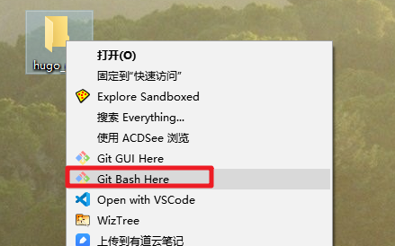
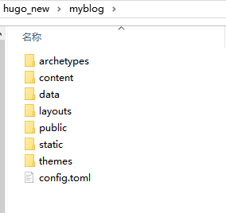
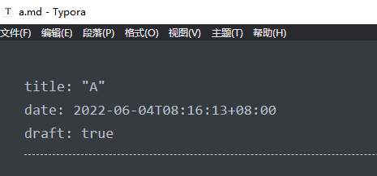
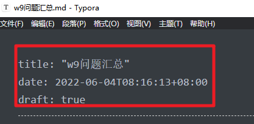
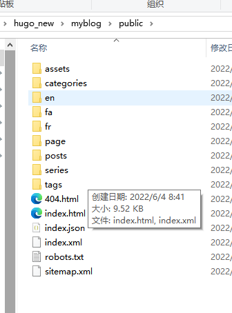
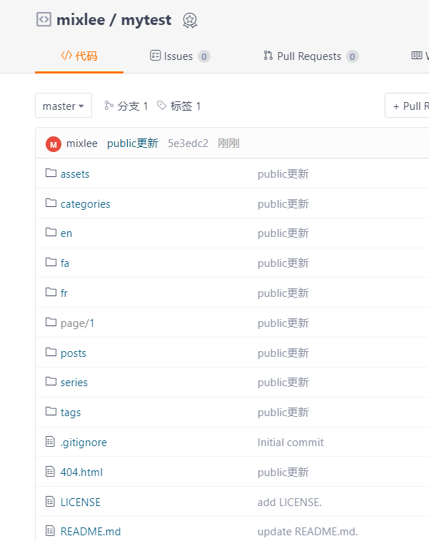

hugo静态页面
Contents
gitee中的静态页面管理系统
支持 Jekyll、Hugo、Hexo编译静态资源
- 将md文件自动变换成静态页面html
- 初步了解
- 自行
流程
- hugo 安装与配置
- 编写md（准备已经编辑好的md、对其进行调整）
- 安装hugo的主题包
- hugo 命令进行本地测试
- hugo命令进行本地发布——>html文件及各种其他文件
- git将本地发布的页面推送到远端
- gitee pages中重新部署
安装hugo
- 安装过程非常简单。只需要下载合适你系统版本的 Hugo 二进制 。
- 更理想的是，为了更方便的使用，你应该把它安装到你的 PATH 环境变量所在的位置。
- 推荐下载extended版本
- 安装与配置
- 把hugo.exe放置到 C:\Windows\System32 内
测试hugo是否可以正常运行
- 在命令行里面 输入
hugo version
hugo的基本命令
创建网站
-
创建一个新的文件夹
-
打开命令行窗口
- 
-
SD@DESKTOP-0DCL18 MINGW64 ~/Desktop/hugo_new $ hugo new site myblog -
自动生成了一堆文件、文件夹
- 
新建md文件或者使用原有的md文件
-
md文件一定要放置到content\posts文件夹内
-
新建md文件
-
SD@DESKTOP-0DCL18 MINGW64 ~/Desktop/hugo_new $ hugo new posts/a.md Error: Unable to locate config file or config directory. Perhaps you need to create a new site. Run `hugo help new` for details. SD@DESKTOP-0DCL18 MINGW64 ~/Desktop/hugo_new $ cd myblog SD@DESKTOP-0DCL18 MINGW64 ~/Desktop/hugo_new/myblog $ hugo new posts/a.md Content "C:\\Users\\SD\\Desktop\\hugo_new\\myblog\\content\\posts\\a.md" created -
注意：需要到自己建立的website文件夹内再执行创建md的操作。
-

-
md文件内容最上面
- 
- 这些信息可以帮助hugo实现将md生成html的重要信息
-
-
已有的md文件，放入posts文件夹
- 在文件头部增加相应的信息
- 
-
hugo主题包的安装
papermod为例
下载主题
- 主题仓库
- 示例仓库
- GitHub - adityatelange/hugo-PaperMod at exampleSite
- 主要使用的是配置文件 config.yml
应用主题
- 将下载的主题包解压到themes文件夹内
-

- 编辑配置文件
- 修改主题名称
- 修改baseURL删除后面的目录名称
主题扩展
hugo本地测试
开启本地服务命令
hugo server -D
浏览器输入 http://localhost:1313

hugo本地发布
发布的命令
hugo -D
发布后的文件在哪里
- public文件夹
- 
本地打开查看后发现有问题
- 看着不正常
- 需要修改配置文件里面的baseURL
- 根据自己的gitee pages里面的网站地址进行修改
- http://mixlee.gitee.io/mytest
- 因为baseURL的原因，在本地是无法正常浏览效果的。
gitee仓库更新
- 